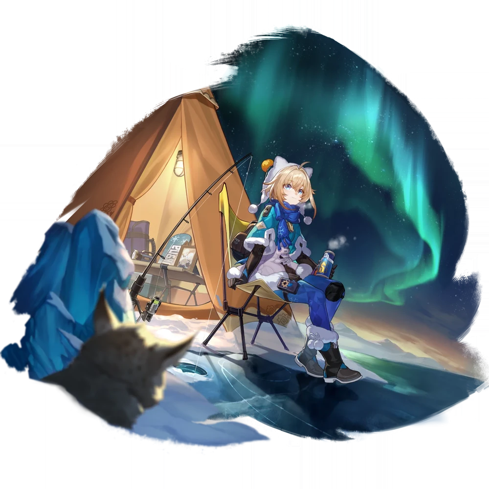

| Nome | Lynx Landau |
|---|---|
| Elemento | Quantico | Raridade | ✦ ✦ ✦ ✦ |
| Caminho | A Abundancia |
| Sexo | Femea |
| Especie | Humana |
| Facção | Belobog (no perfil) Família Landau | Mundo | Jarilo-VI | Como obter | Previsto, Previsto, Predito | Data de Lançamento | 2023-09-20 | Adicionado pela primeira vez | Versão 1.3 |
Ascensões e estatísticas
| Fase de Ascensão | Level | Base HP | Base ATK | Base DEF | Base SPD |
|---|---|---|---|---|---|
| 0✦ | 1/20 | 144 | 67 | 75 | 100 |
| 20/20 | 280 | 131 | 146 | 100 | |
| 1✦ | 20/30 | 338 | 157 | 176 | 100 |
| 30/30 | 410 | 191 | 213 | 100 | |
| 2✦ | 30/40 | 468 | 218 | 243 | 100 |
| 40/40 | 540 | 252 | 281 | 100 | |
| 3✦ | 40/50 | 597 | 278 | 311 | 100 |
| 50/50 | 669 | 312 | 348 | 100 | |
| 4✦ | 50/60 | 727 | 339 | 378 | 100 |
| 60/60 | 799 | 372 | 416 | 100 | |
| 5✦ | 60/70 | 856 | 399 | 446 | 100 |
| 70/70 | 928 | 433 | 483 | 100 | |
| 6✦ | 70/80 | 986 | 460 | 513 | 100 |
| 80/80 | 1,058 | 493 | 551 | 100 |
| Nível | Custo de Evolução | Materiais de Ascensão do Personagem | Materiais Necessários |
|---|---|---|---|
| 0 → 1 ✦ |  3,200 3,200 |
 4 4 |
|
| 1 → 2 ✦ | 6,400 |
8 |
|
| 2 → 3 ✦ | 12,800 |
2 |  5 5 |
| 3 → 4 ✦ | 32,000 |
5 | 8 |
| 4 → 5 ✦ | 64,400 |
15 |  5 5 |
| 5 → 6 ✦ | 128,000 |
28 | 7 |
Habilidades de combate
| Icone | Tipo | Nome | Descrição | Marcação | Energia | Resistência DMG |
|---|---|---|---|---|---|---|
| ATK básico | Crampon Técnico de Gelo | Causa DMG Quantum igual a 25% – 55% do HP máximo deste personagem a um único inimigo. | Alvo único | Geração: 20 | 30 | |
 |
Skill | Latas de acampamento salgadas | Aplica "Resposta de Sobrevivência" a um único aliado alvo e aumenta seu HP máximo em 5%—8% do HP máximo do Lynx mais 50—222,5 . Se o aliado alvo for um personagem no Caminho da Destruição ou Preservação, a chance de ele ser atacado por inimigos aumentará bastante. "Resposta de Sobrevivência" dura 2 turno(s). Restaura o HP do alvo em 8%—12,8% do HP máximo do Lynx mais 80—356 . | Restaurar | Geração: 30 | |
| Ultimate | Primeiros Socorros em Campo de Neve | Dissipa 1 debuff(s) de todos os aliados e imediatamente restaura seus respectivos HP em uma quantidade igual a 9%—14,4% do HP máximo do Lynx mais 90—400,5 . | Restaurar | Custo: 100 Geração: 5 | ||
| Talento | Experiência de sobrevivência ao ar livre | Ao usar a Habilidade ou Ultimate do Lynx, aplica cura contínua ao aliado alvo por 2 turno(s), restaurando o HP do aliado alvo em uma quantidade igual a 2,4%—3,84% do HP máximo do Lynx mais 24—106,8 no início de cada um deles. vez. Se o alvo tiver "Resposta de Sobrevivência", o efeito de cura contínua restaura adicionalmente o HP em uma quantidade igual a 3%—4,8% do HP máximo do Lynx mais 30—133,5 . | Restaurar | |||
| Técnica | Barra energética de chocolate | Depois que Lynx usa sua Técnica, no início da próxima batalha, todos os aliados recebem o efeito de cura contínuo de seu Talento, que dura 2 turno(s). | Restaurar |
Eidolons
| Icone | Nome da habilidade | Nivel | Descrição |
|---|---|---|---|
| Manhã de caminhada na neve | 1 | Ao curar aliados com HP igual ou inferior a 50%, a Cura Extrovertida do Lynx aumenta em 20%. Este efeito também funciona na cura contínua. | |
| Meio-dia do Forno Portátil | 2 | Um alvo com "Resposta de Sobrevivência" pode resistir à aplicação de debuff por 1 vez(es). | |
| Tarde do Farol da Avalanche | 3 | Habilidade Nv. +2, até um máximo de Nv. 15. ATK Básico Nv. +1, até um máximo de Nv. 10. | |
| Crepúsculo da Fogueira Quente | 4 | Quando "Resposta de Sobrevivência" é obtida, aumenta o ATK do alvo em uma quantidade igual a 3% do HP máximo do Lynx por 1 turno(s). | |
| Noite do Chá Aurora | 5 | Nível final. +2, até um máximo de Nv. 15. Talento Nv. +2, até um máximo de Nv. 15. | |
| Carta do Amanhecer dos Exploradores | 6 | Além disso, aumenta o efeito de aumento do HP máximo da "Resposta de Sobrevivência" em uma quantidade igual a 6% do HP máximo do Lynx e aumenta o RES do efeito em 30%. |
Traços
| Custo Total (1 → 6 para rastreamento de ATK básico) | ||||||
|---|---|---|---|---|---|---|
| 192.000 |
4 |
5 |
5 |
 2 2 |
 6 6 |
 8 8 |
| Custo total (1 → 10 para um rastreamento) | ||||||||
|---|---|---|---|---|---|---|---|---|
| 522.000 |
6 |
10 |
5 |
2 |
12 |
23 |
 3 3 |
 1 1 |